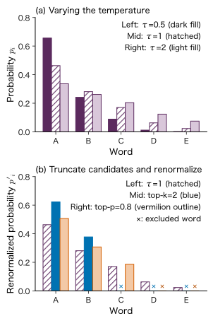
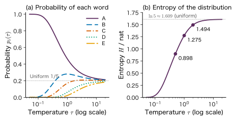

Chapter 26How GPT Learns and Generates Text
- How does GPT write text? How is finding “the probability of the next word” connected to writing a coherent passage?
- Why does it sometimes assign a high probability to a sentence that is grammatically correct but wrong in content, such as “Mercury is a solid at room temperature”?
- Why does the answer differ slightly each time even when we ask the same question? Does the model remember and learn what we teach it during a conversation?
After writing “Examples of metals include,” iron, copper, and aluminum all seem plausible as the next word, but “glass” or “is” does not seem likely to follow. Without being aware of it, we estimate “which word is likely to come, and how likely” for the continuation of a sentence. What GPT does is to produce this estimate numerically as probabilities, choose one word according to those probabilities, append the chosen word to the end of the sentence, and estimate again; this operation is repeated. When we feed “Examples of metals include” to the small model trained for this book (28,384 parameters), the probabilities of the next word come out as iron 0.321, copper 0.288, and aluminum 0.267. Yet when we feed the same model “Mercury at room temperature is,” it places a high probability of 0.998 on “solid.” This is so even though mercury is a liquid at room temperature.
In this chapter we explain how the Transformer built in the previous two chapters (Chapter 24, Chapter 25) is trained and used as a probability model of text. We treat, in order: tokenization, which turns text into a sequence of integers; the autoregressive decomposition, which splits the probability of a whole text into a product of “next-token probabilities”; next-token prediction and perplexity, which make this the objective of training; the difference between training and generation; how to choose the next token by greedy decoding, temperature, top-k, and top-p; the difference between providing context and updating weights; and instruction tuning and preference-based tuning. Finally, we check, using actual outputs of the small model, why plausible errors occur and how to distinguish generation probability from correctness.
- You can explain what each of the three words Generative, Pre-trained, and Transformer refers to.
- You can carry out merges of byte pair encoding (BPE) by hand calculation on a short string, and explain why tokens do not coincide with words.
- You can derive the autoregressive decomposition from the product rule and compute the probability of a sentence as a product of conditional probabilities.
- You can derive that the loss of next-token prediction is the cross-entropy (the sum of the KL divergence from the data distribution and a constant), and compute and explain the meaning of perplexity.
- You can tabulate how weights, inputs, the way the computation proceeds, and the use of random numbers differ between training and generation.
- You can compute by hand how the distribution of the next token changes under greedy decoding, temperature, top-k, and top-p.
- You can distinguish providing context from updating weights, and explain the place of instruction tuning and preference-based tuning.
- You can give four reasons why plausible errors occur, and show by an example that a high generation probability and correct content are different things.
Sections for the introductory route: 26.1, 26.2, 26.3, 26.4, 26.5, 26.6, 26.7, 26.9, 26.10, 26.14. Sections marked “Detailed Route” may be skipped on a first reading.
Notation: Conventions of this chapter
As in Chapters 24 and 25, we write a sequence as a matrix whose rows are the sequence elements (the $t$th row of $\bm{X}\in\R^{T\times d_{\mathrm{model}}}$ is the vector at position $t$; linear transformations are applied by multiplying from the right). A token is an integer ID, and we write the sequence as $x_1,x_2,\dots,x_T$, the part before position $t$ as $x_{\lt t}=(x_1,\dots,x_{t-1})$, and the part up to position $t$ as $x_{\le t}$. The vocabulary size is $V_{\mathrm{voc}}$ (we attach a subscript to distinguish it from the value matrix $\bm{V}$), and indices within the vocabulary are denoted $i,j$. The output $\bm{o}_t\in\R^{V_{\mathrm{voc}}}$ at position $t$ is called the logit (the score before applying softmax). The model parameters are collectively written $\bm{\theta}$. The temperature used in generation is written $\tau$, to distinguish it from the physical temperature $T$ and the sequence length $T$. As in Chapters 14 and 15, the loss in this chapter is written as a mean (Chapters 8 and 9 wrote it as a sum).
26.1 Generative, Pre-trained, Transformer — The Meaning of the Three Words
26.1.1 What is being done — adding one token at a time
GPT stands for Generative Pre-trained Transformer. Let us check the meaning of the three words together with how generation proceeds (Figure 26.1).
- Generative: The model is the probability distribution $p(x_{1:T})$ of text itself, and new sequences can be sampled from it (that is, drawn according to the probabilities). This differs from a classifier that outputs only “input → label.”
- Pre-trained: Without using the labels of any particular task, the model is first trained on a large amount of text with the task of “guessing the next token.” The correct answer lies within the text itself, so no one needs to attach labels (self-supervised learning; Chapter 1, Section 1.3). The weights obtained in this way serve as the starting point and are adjusted later for other purposes (fine-tuning; Section 26.8).
- Transformer: Of the Transformer of Chapter 25, this is the form obtained by stacking only the decoder part with a causal mask attached (Chapter 25, Section 25.7). The output $\bm{o}_t$ at position $t$ gives the distribution of the next token $x_{t+1}$.
Generation is the repetition of “feed in the context → obtain the logits at the last position → turn them into probabilities and pick one → append it to the context.” A method like this, in which the value the model itself has produced becomes the next input and we advance one step at a time, is called autoregressive.
26.1.2 Distinguishing the three kinds of “model” treated in this chapter
This chapter deals with three things of entirely different natures. To avoid confusing them, we distinguish them at the outset (Table 26.1).
| How the weights are determined | Scale | Role in this chapter | |
|---|---|---|---|
| (1) Numerical examples set by hand | A person chooses the values (no training) | A vocabulary of five words, etc. | Hand calculation of the formulas (examples and Table 26.4) |
| (2) A small model trained for this book (Simulator S10, part ②) | Trained on a synthetic corpus for teaching purposes | 2 layers, 2 heads, $d_{\mathrm{model}}=32$, a vocabulary of 67 words, 28,384 parameters | Checking phenomena with actual outputs (Sections 26.6 and 26.9) |
| (3) The actual GPT | Trained on a large amount of real text and then adjusted | 100 million to 175 billion parameters in the published papers (Section 26.11); many later products are not disclosed | We state only what is written in the published papers |
(2) is a small model of the same form as GPT (a decoder-only Transformer), but it is not GPT. Numerical values observed in (2), such as the proportion of errors, do not carry over directly to (3). However, the mechanism by which errors arise (Section 26.9) stems from the form and the objective function, so it can appear in the same form in both (2) and (3).
Example 26.1: Why the probability of text cannot be kept in a table
(1) When the vocabulary has 67 words, how many token sequences of length 5 are there? (2) For a vocabulary $V_{\mathrm{voc}}=50257$ and length $T=1024$, how many digits does the number of token sequences have in decimal notation? (3) From this result, explain why the probability distribution $p(x_{1:T})$ of text cannot be kept as a “table of the probabilities of all sequences.”
Solution. (1) Each position can be filled with any of 67 words, so there are $67^{5}$ $=67\times67\times67\times67\times67$ $=1{,}350{,}125{,}107$ sequences (about $1.35\times10^{9}$).
(2) The number of sequences is $50257^{1024}$. We count the digits using the common logarithm.
$$ \begin{aligned} \log_{10}\bigl(50257^{1024}\bigr)&=1024\times\log_{10}50257\\ &=1024\times4.70120\approx4814.0 \end{aligned} $$This is a number of the order of $10^{4814.0}$, so it has 4815 digits.
(3) The number of sequences is far too large: we can neither prepare an entry of the table for each one nor count the frequency of each entry from the training data. So in Section 26.3 we split the probability of a sequence into a product of “conditional probabilities of the next single token,” and compute those conditional probabilities with a single network whose weights are shared across all contexts.
26.2 Tokenization — Turning Text into a Sequence of Integers
26.2.1 Characters, words, and subwords
A neural network can handle only numbers, so we first cut the text into a sequence of units called tokens and assign each token an integer number (its token ID). The list of tokens in use is the vocabulary, and its size is $V_{\mathrm{voc}}$. A token ID is used as the number that says which row of the embedding matrix $\bm{W}_E\in\R^{V_{\mathrm{voc}}\times d_{\mathrm{model}}}$ to pick out (Chapter 23, Section 23.1, Chapter 25, Section 25.2).
There are three main ways to cut the text.
- Character level: the vocabulary is small (a few dozen for the Latin alphabet, a few thousand even for Japanese), but the sequences become long. For the same context length $T_{\max}$, the stretch of text that can be viewed at once becomes shorter.
- Word level: the sequences are short, but the vocabulary becomes huge, and words that are not in the training data (such as the name of a new compound) cannot be handled.
- Subword level: frequently occurring groups of characters become a single token, and rare words are represented as combinations of short fragments. This is a way of striking a balance between vocabulary size and sequence length, and GPT uses it.
To keep the explanation simple, the small model in Simulator S10 uses the word level (67 words separated by spaces). The actual GPT uses subwords, and the vocabulary of GPT-2 has 50,257 entries (Section 26.11).
26.2.2 Byte pair encoding (BPE)
A representative method for building a subword vocabulary is byte pair encoding (BPE). It is an algorithm originally proposed for data compression (Gage 1994), and Sennrich, Haddow & Birch (2016) used it to build vocabularies for translation. The procedure is as follows.
Definition 26.1: Learning a BPE vocabulary
- Split the training text into words and count the number of occurrences of each word. Write each word as a sequence of single-character symbols, and append the symbol “_”, which marks the end of a word, at the end. The initial vocabulary is the set of all characters that appear together with “_”.
- Over all the words, count the occurrences of each pair of two adjacent symbols, weighting by the number of occurrences of the word.
- Merge the most frequent pair into one new symbol and add it to the vocabulary. Replace that pair in every word by the new symbol.
- Repeat steps 2–3 a fixed number of times (or until the vocabulary reaches a fixed size). Record the merge rules in the order in which they were carried out.
When cutting new text into tokens, first split it into characters, and then apply the recorded merge rules in the same order as in training.
Example 26.2: Following four merges by hand
In the training text, the word oxide appeared once, ion four times, ions once, and oxygen twice (an example made up for explanation). Carry out four BPE merges, and find the pair merged at each step and the segmentation of each word after the four merges. Assume there are no ties between pairs.
Solution. The initial symbol sequences are o x i d e _ (once), i o n _ (four times), i o n s _ (once), and o x y g e n _ (twice). We count the occurrences of adjacent pairs.
- First merge: (n, _) occurs four times in ion and twice in oxygen, so $4+2=6$. (i, o) occurs four times in ion and once in ions, so $5$; (o, n) is also $5$; (o, x) occurs once in oxide and twice in oxygen, so $3$. We merge the largest, (n, _), to make “n_”. Then ion becomes i o n_, and oxygen becomes o x y g e n_.
- Second merge: (i, o) occurs in ion and ions, so $4+1=5$. Since “n_” has been created, (o, n) is left with only the one occurrence in ions, so $1$. (o, n_) is $4$ from ion, and (o, x) is $3$. We merge the largest, (i, o), to make “io”.
- Third merge: (io, n_) is $4$ from ion, (o, x) is $3$, and (x, y) and the others are $2$. We merge (io, n_) to make “ion_”. Then ion becomes the single symbol ion_.
- Fourth merge: the largest remaining pair is (o, x), with $1+2=3$. We merge it to make “ox”.
The segmentation after four merges is as shown in Table 26.2 and Figure 26.2, and the total number of tokens decreased from $6\times1+4\times4+5\times1+7\times2=41$ to $5\times1+1\times4+4\times1+5\times2=23$. The vocabulary has 14 entries: the initial 10 symbols (o, x, i, d, e, n, s, y, g, _) plus 4 new ones.
| Step | Merged pair (count) | Runner-up pair (count) | ion (×4) | ions (×1) | oxygen (×2) |
|---|---|---|---|---|---|
| 0 | — | — | i o n _ | i o n s _ | o x y g e n _ |
| 1 | (n, _) (6) | (i, o), (o, n) (5) | i o n_ | i o n s _ | o x y g e n_ |
| 2 | (i, o) (5) | (o, n_) (4) | io n_ | io n s _ | o x y g e n_ |
| 3 | (io, n_) (4) | (o, x) (3) | ion_ | io n s _ | o x y g e n_ |
| 4 | (o, x) (3) | (x, y), etc. (2) | ion_ | io n s _ | ox y g e n_ |
26.2.3 Tokens do not coincide with words
From the result of Example 26.2 we can see the following.
- A word that occurs often (ion) is gathered into one token, and a word that occurs rarely (oxide) is cut into small pieces. What becomes a single token is determined by the statistics of the training text. It is not necessarily a “unit of meaning” as a person would think of it.
- Even for the same string ion, ion and ions are cut differently. Therefore the model does not always see “the word ion” as the same single symbol.
- A word never seen in training (for example, dioxide) can always be represented if it is cut into fragments such as o, x, i, d, e. GPT-2 uses bytes (single bytes of UTF-8) instead of characters as the smallest symbols, so that no string ever falls outside the vocabulary (Radford et al. 2019).
This property affects the handling of numbers and chemical formulas. For example, whether “1300” becomes one token or is split into “13” and “00” depends on the vocabulary, and the model does not necessarily see the sequence of digits in the same units as a person does. When we measure the length or cost of text by the number of tokens, the number of tokens coincides neither with the number of characters nor with the number of words.
Why does BPE merge “starting from the most frequent pair”?
When a pair is made into one symbol, the number of symbols decreases by one each time that pair appears (for the first merge of Example 26.2, 41 → 35). By choosing at every step “the merge that removes the most symbols”, this greedy compression can represent text briefly with a limited vocabulary. However, it does not guarantee a vocabulary that is optimal overall.
26.3 Autoregressive Decomposition — The Probability of a Text as a Product over Next Tokens
26.3.1 Applying the product rule repeatedly
As we saw in Example 26.1, we cannot keep a table of probabilities for entire sequences. So we decompose the probability of a sequence by applying the product rule $p(a,b)=p(a)\,p(b\mid a)$ from Chapter 2 (Chapter 2, Section 2.2) repeatedly. We write it out line by line for $T=3$.
$$ \begin{aligned} p(x_1,x_2,x_3)&=p(x_1,x_2)\,p(x_3\mid x_1,x_2)\\ &=p(x_1)\,p(x_2\mid x_1)\,p(x_3\mid x_1,x_2) . \end{aligned} $$The first line is the product rule with $a=(x_1,x_2)$ and $b=x_3$; in the second line we applied the product rule once more to $p(x_1,x_2)$. Continuing in the same way up to $T$ tokens, we obtain the following decomposition.
The factor for $t=1$ is the unconditional $p(x_1)$. This equation is an identity, not an approximation, and it holds for any distribution. What distinguishes it from an n-gram model is that it does not impose the Markov property (the assumption that each token depends only on a few immediately preceding tokens; Chapter 22, Section 22.2).
26.3.2 The model supplies the factors on the right-hand side with a single network
GPT computes each factor on the right-hand side of Eq. \eqref{eq:26-ar} with a single network. In practice, a special token <bos> that marks the beginning of a sentence is placed at the start of the sequence, so that $x_1=$ <bos> (Simulator S10 does the same; the position numbers on its screen also count from 1). An <eos> token is placed at the end of the sentence. Given the context $x_{\le t}$ up to position $t$, the probability that the next token is the $i$th token of the vocabulary is computed from the logit $\bm{o}_t\in\R^{V_{\mathrm{voc}}}$ at position $t$ as
\begin{equation} \begin{aligned} &p_{\bm{\theta}}(x_{t+1}=i\mid x_{\le t})\\ &=\softmax(\bm{o}_t)_i\\ &=\frac{\exp(o_{t,i})}{\sum_{j=1}^{V_{\mathrm{voc}}}\exp(o_{t,j})} \end{aligned} \label{eq:26-cond} \end{equation}(here $o_{t,i}$ is the $i$th component of $\bm{o}_t$). In the row-wise notation, writing $\bm{H}\in\R^{T\times d_{\mathrm{model}}}$ for the output of the last layer, the logits at all positions are obtained with a single matrix product, $\bm{O}=\bm{H}\bm{W}_U\in\R^{T\times V_{\mathrm{voc}}}$ (here $\bm{W}_U\in\R^{d_{\mathrm{model}}\times V_{\mathrm{voc}}}$; Chapter 25, Section 25.7). The $t$th row of $\bm{O}$ is $\bm{o}_t^{\tp}$.
What matters here is that, whatever the context length $t$ is, the conditional probability is produced with the same weights $\bm{\theta}$. Unlike a table, the network shares information among contexts so that it “gives similar distributions for similar contexts”. Bengio et al. (2003) showed that a neural-network language model that represents words by embedding vectors predicts better than an n-gram model. Sharing information is the source of generalization, and at the same time the source of the errors that we will see in Section 26.9.
Example 26.3: Finding the probability of a sentence as a product of conditional probabilities
A model gave the following conditional probabilities after <bos> (values chosen for illustration).
$p(\text{iron}\mid\langle\text{bos}\rangle)=0.5$, $p(\text{is}\mid\langle\text{bos}\rangle\,\text{iron})=0.8$, $p(\text{metal}\mid\langle\text{bos}\rangle\,\text{iron is})=0.7$, $p(\langle\text{eos}\rangle\mid\langle\text{bos}\rangle\,\text{iron is metal})=0.9$.
(1) Find the probability that “iron is metal <eos>” follows <bos>. (2) Find its logarithm. (3) In a bigram model that “looks only at the single preceding word”, how is the third factor rewritten?
Solution. (1) By Eq. \eqref{eq:26-ar}, conditioning on $x_1=\langle\text{bos}\rangle$,
$$ \begin{aligned} &p(\text{iron is metal }\langle\text{eos}\rangle\mid\langle\text{bos}\rangle)\\ &=0.5\times0.8\times0.7\times0.9=0.252 . \end{aligned} $$(2) The logarithm of a product is the sum of the logarithms.
$$ \begin{aligned} \ln 0.252&=\ln0.5+\ln0.8+\ln0.7+\ln0.9\\ &=-0.6931-0.2231\\ &\quad-0.3567-0.1054\\ &=-1.3783 . \end{aligned} $$For a long sequence, a product of probabilities becomes extremely small and is rounded to 0 by the computer (underflow). For this reason, in practice we compute with a sum of logarithms.
(3) The bigram model replaces $p(\text{metal}\mid\langle\text{bos}\rangle\,\text{iron is})$ with $p(\text{metal}\mid\text{is})$. What tends to come after “is” has the same value regardless of the material name that appears earlier. This is why, in the “Comparison: bigram model” on the S10 screen, the bigram model cannot produce a material name after “an example of metal is” (since the previous token is “is”, it outputs metal 0.180, electricity 0.107, and so on).
26.4 Training — Next-Token Prediction and Perplexity
26.4.1 The loss: the mean negative log-probability of the next token
Let $x_1,x_2,\dots,x_{T+1}$ (with $x_1=$ <bos>) be a single sequence used for training. At each position $t=1,\dots,T$, we have the output predict the “next token $x_{t+1}$”. We define the loss as the log-likelihood in Eq. \eqref{eq:26-ar}, divided by the number of positions $T$ and with its sign reversed.
Its unit is nat/token. When the training data consist of many sequences, we average over all positions of all sequences (with minibatches, we average within the minibatch; Chapter 15, Section 15.5). This is called next-token prediction. If we represent the correct token $x_{t+1}$ by a one-hot vector $\bm{y}_t\in\{0,1\}^{V_{\mathrm{voc}}}$, the term for each position, $-\ln p_{\bm{\theta}}(x_{t+1}\mid x_{\le t})=-\sum_{i}y_{t,i}\ln\softmax(\bm{o}_t)_i$, is exactly the cross-entropy of multiclass classification from Chapter 9, Section 9.5. Training GPT can be said to be performing “classification into $V_{\mathrm{voc}}$ classes (the vocabulary size)” at all positions simultaneously.
26.4.2 Reducing the loss means approaching the distribution of the data
Write $p_{\mathrm{data}}(\cdot\mid c)$ for the true distribution of the next token after a context $c=x_{\le t}$, and $q(\cdot\mid c)=p_{\bm{\theta}}(\cdot\mid c)$ for the model's distribution. If we average the loss over the tokens that follow the context $c$ in the data, then by the law of large numbers it approaches the following expectation (expected value).
Derivation: Expected loss = entropy + KL
To keep the equations short, within this derivation only we write $p(v)=p_{\mathrm{data}}(v\mid c)$ and $q(v)=q(v\mid c)$. We start from the definition of the expectation ($\Ex$ is the mean when the token $v$ is drawn according to $p(v)$) and multiply the argument of the logarithm by $p(v)/p(v)=1$.
$$ \begin{aligned} \Ex\bigl[-\ln q(v)\bigr]&=-\sum_{v}p(v)\ln q(v)\\ &=-\sum_{v}p(v)\ln\Bigl[p(v)\cdot\frac{q(v)}{p(v)}\Bigr]\\ &=-\sum_{v}p(v)\ln p(v)\\ &\quad+\sum_{v}p(v)\ln\frac{p(v)}{q(v)} . \end{aligned} $$In the third line the first term is the entropy $H[p_{\mathrm{data}}]$, and the fourth line is the KL divergence (Chapter 5, Section 5.4).
∎
The left-hand side is the cross-entropy (the expected loss). The first term on the right-hand side is determined by the data alone and does not depend on $\bm{\theta}$. Therefore, reducing the loss is the same as bringing the model's distribution closer to the data's distribution in the sense of KL in each context (the sequence version of “the true nature of the cross-entropy loss” in Chapter 5, Section 5.5). Since KL $\ge0$, the expected loss cannot fall below $H[p_{\mathrm{data}}]$. Text has intrinsic randomness (many different continuations are possible after the same context), so the loss ordinarily does not reach 0.
This result becomes important in Section 26.9. What the loss measures is “how well the model predicted the tokens that tend to come next in the training data”, and whether the content of a sentence is correct does not enter the loss anywhere.
26.4.3 Feeding in the correct sequence and computing all positions at once
In training, the input is not a sequence that the model generated itself but the correct sequence from the training data (teacher forcing). The input is $x_1,\dots,x_T$, and the targets are $x_2,\dots,x_{T+1}$, shifted by one (Figure 26.3).
Without the causal mask, the output at position $t$ could see the correct token $x_{t+1}$ itself through attention; the loss would become small, but the model would learn nothing. The mask guarantees that “the output at position $t$ is a function of $x_{\le t}$ only”, which preserves the meaning of Eq. \eqref{eq:26-cond}, and on top of that it yields $T$ classification problems from a single sequence of length $T$ in one forward propagation. This is in contrast to an RNN (Chapter 23, Section 23.3), which computes the positions one after another.
26.4.4 The gradient is “probability − target”
As in Chapter 9, Section 9.5, the gradient of the term at position $t$, $\ell_t=-\ln\softmax(\bm{o}_t)_{x_{t+1}}$, with respect to the logits is
\begin{equation} \begin{aligned} &\pdiff{\ell_t}{\bm{o}_t}=\bm{p}_t-\bm{y}_t,\\ &\bm{p}_t=\softmax(\bm{o}_t)\in\R^{V_{\mathrm{voc}}} \end{aligned} \label{eq:26-grad} \end{equation}(where $\bm{y}_t$ is the one-hot vector of the correct token). The component for the correct word is $p_{t,x_{t+1}}-1\le0$, and the other components are $p_{t,i}\ge0$, so one step of gradient descent raises the logit of the correct word and lowers the logits of the other words in proportion to their probabilities. Through backward propagation (Chapter 15, Section 15.2), this gradient is distributed to all the weights of the embeddings, attention, and FFN. Since the loss $L$ is an average over $T$ terms, $\partial L/\partial\bm{o}_t=(\bm{p}_t-\bm{y}_t)/T$.
26.4.5 Perplexity — the number of choices among which the model is uniformly undecided
Definition 26.2: Perplexity
Let $L$ (Eq. \eqref{eq:26-loss}) be the mean negative log-probability over the positions of a sequence. Then
\begin{equation} \begin{aligned} \mathrm{PPL}&=\exp(L)\\ &=\Bigl(\prod_{t=1}^{T}p_t\Bigr)^{-1/T} \end{aligned} \label{eq:26-ppl} \end{equation}is called the perplexity. Here $p_t=p_{\bm{\theta}}(x_{t+1}\mid x_{\le t})$ is the probability of the correct token at position $t$. The second equality follows from $\exp\bigl(-\frac1T\sum_t\ln p_t\bigr)=\bigl(\prod_tp_t\bigr)^{-1/T}$. It is the reciprocal of the geometric mean of the probabilities of the correct tokens.
To see the meaning, suppose that at every position the model is uniformly undecided among $K$ choices (it puts probability $1/K$ on the correct token). Then $L=-\ln(1/K)=\ln K$, so $\mathrm{PPL}=K$. That is, the perplexity expresses “the model is as troubled as if it were uniformly undecided among this many choices on average”. The smaller the value, the better; the minimum is 1 (probability 1 on the correct token every time).
- A model that chooses uniformly from a vocabulary of $V_{\mathrm{voc}}$ tokens has $\mathrm{PPL}=V_{\mathrm{voc}}$. For the vocabulary of S10 this is 67, and the loss is $\ln67\approx4.205$ nat/token. The loss just after the start of training is about this value because, with the initial weights, the logits are almost equal and the distribution is almost uniform.
- The small model of S10 has a loss of 0.501 nat/token and $\mathrm{PPL}=e^{0.501}\approx1.65$ on the validation data (sentences not used in training) (see “About this model” on the screen). The bigram model, which looks only at the single preceding token, has 2.52, so the effect of looking at the whole context shows up in the numbers.
Perplexities can be compared only between models with the same tokenization. If the tokens are split differently, the information content per token differs.
Example 26.4: Loss, perplexity, and gradient
(1) When the four conditional probabilities 0.5, 0.8, 0.7, 0.9 of Example 26.3 are placed on the correct tokens, find the loss $L$ of Eq. \eqref{eq:26-loss} and the perplexity. (2) Let the vocabulary have three words, and suppose that at some position the logits are $\bm{o}=(1,\,0,\,-1)$ and the correct word is the second one. Find the probabilities $\bm{p}$, the loss $\ell$ at that position, and the gradient $\partial\ell/\partial\bm{o}$.
Solution. (1) By Example 26.3 (2) the sum of the logarithms is $-1.3783$, and $T=4$, so
$$ \begin{aligned} L&=-\frac{-1.3783}{4}=0.3446\ \text{nat/token},\\ \mathrm{PPL}&=e^{0.3446}=1.411 . \end{aligned} $$As a check, this agrees with the reciprocal of the geometric mean, $(0.252)^{-1/4}=1.411$. On average, this is the same as being undecided among about 1.41 choices.
(2) We have $e^{1}=2.7183$, $e^{0}=1$, $e^{-1}=0.3679$, and their sum is $4.0862$.
$$ \begin{aligned} \bm{p}&=\Bigl(\frac{2.7183}{4.0862},\ \frac{1}{4.0862},\ \frac{0.3679}{4.0862}\Bigr)\\ &=(0.6652,\ 0.2447,\ 0.0900) . \end{aligned} $$The loss is $\ell=-\ln0.2447=1.4076$. By Eq. \eqref{eq:26-grad}, the gradient is
$$ \begin{aligned} \bm{p}-\bm{y}&=(0.6652,\,0.2447-1,\,0.0900)\\ &=(0.6652,\,-0.7553,\,0.0900) . \end{aligned} $$Gradient descent is $\bm{o}\leftarrow\bm{o}-\eta(\bm{p}-\bm{y})$, so it raises the logit of the correct second word and lowers most strongly the first logit, which has the largest probability.
26.5 The Difference Between Training and Generation
Even for the same network, the way it is used when training is completely different from the way it is used when generating text (Table 26.3).
| Training | Generation | |
|---|---|---|
| Weights $\bm{\theta}$ | Updated by the gradient | Fixed (not a single one is changed) |
| Input | The correct sequence from the training data (teacher forcing) | Tokens the model itself has chosen are appended to the given context |
| How the computation proceeds | All positions in parallel in one forward propagation | One token at a time, in order (the next input is determined by the previous output) |
| Outputs used | Distributions at all positions (probability of the correct token) | Only the distribution at the last position |
| Random numbers | Not used (except for the choice of minibatches and the initial values) | Used for sampling (not used for greedy decoding) |
| Goal | Reduce the loss $L$ (Eq. \eqref{eq:26-loss}) | Produce a continuation according to the distribution (no loss is computed) |
It is important that the input during generation is “the model's own output.” In training, a correct context was always given as input, but in generation, even if a token that was once chosen is wrong, it becomes the next context. The model then keeps predicting on a context that it never saw during training (one that contains errors), and one error can lead to another (reason 4 in Section 26.9).
Advanced Topic: The KV cache
In generation, we run one forward propagation on a context of length $t$ to choose $x_{t+1}$, and then run another forward propagation on a context of length $t+1$. Because of the causal mask, the key and value in each layer at positions $1,\dots,t$ (Chapter 24, Section 24.5) do not change when a token is appended after them. So if we store the keys and values of each layer once they have been computed, and compute the query, key, and value only for the new position to obtain the attention, we can reduce the computation without changing the result. This is called the KV cache. In exchange, memory for storage is needed in proportion to the context length, the number of layers, and the dimension.
Example 26.5: Counting the computation needed for generation
From a prompt of length 3 (the context given to the model), 5 tokens are generated. (1) Without a KV cache, when the whole context is propagated forward again each time, what is the total number of positions processed by the forward propagations? (2) What happens when a KV cache is used?
Solution. The fifth token is chosen from a context of length 7, so the context lengths of the forward propagations are 3, 4, 5, 6, 7.
(1) $3+4+5+6+7=25$ positions.
(2) First the 3 positions of the prompt are computed, and after that one new position is computed each time, four times in all, so $3+1+1+1+1=7$ positions.
Comparing by the number of attention scores, with the context length denoted $n$, it is $\sum_{n=3}^{7}n(n+1)/2=80$ without the cache and $6+4+5+6+7=28$ with the cache. The longer the context, the larger the difference.
26.6 Choosing the Next Token — Greedy, Temperature, Top-k, and Top-p
26.6.1 Four methods
We define methods for choosing one next token from the logits $\bm{o}=(o_1,\dots,o_{V_{\mathrm{voc}}})$ at the last position (the subscript $t$ is omitted).
Definition 26.3: Ways to choose the next token
- greedy (greedy decoding): choose the word $\argmax_i o_i$ with the largest logit. No random numbers are used, and the same context always produces the same word.
- temperature $\tau\gt0$: sample from the distribution obtained by dividing the logits by $\tau$ and then applying softmax. \begin{equation} \begin{aligned} &p_i(\tau)\\ &=\frac{\exp(o_i/\tau)}{\sum_{j=1}^{V_{\mathrm{voc}}}\exp(o_j/\tau)} \end{aligned} \label{eq:26-temp} \end{equation}
- top-k: keep only the $k$ words with the largest probabilities, renormalize the probabilities of the remaining words so that they sum to 1, and then sample.
- top-p (nucleus sampling): add up the probabilities in decreasing order, keep the words up to the one at which the cumulative sum first reaches $p$ or more, renormalize, and then sample (Holtzman et al. 2020). The number of words that remain varies with the shape of the distribution.
Let $S$ be the set of words that are kept. Then the renormalized probabilities are
\begin{equation} \begin{aligned} p'_i&=\frac{p_i(\tau)}{\sum_{j\in S}p_j(\tau)}\\ &\qquad(i\in S),\\ p'_i&=0\quad(i\notin S) \end{aligned} \label{eq:26-renorm} \end{equation}The S10 simulator proceeds in this order: (1) divide by $\tau$, (2) softmax, (3) top-k, (4) top-p applied to the probabilities renormalized in (3), (5) renormalize.
Sampling draws one uniform random number $u\in[0,1)$, arranges the remaining words in decreasing order of probability, adds up the probabilities, and chooses the word at which the cumulative sum first exceeds $u$.
26.6.2 The role of temperature
Taking the ratio of the probabilities of two words in Eq. \eqref{eq:26-temp}, the denominator cancels and we obtain
\begin{equation} \frac{p_i(\tau)}{p_j(\tau)}=\exp\Bigl(\frac{o_i-o_j}{\tau}\Bigr) \label{eq:26-ratio} \end{equation}If we let $r=e^{o_i-o_j}$ be the ratio at $\tau=1$, the ratio at $\tau$ is $r^{1/\tau}$. For $\tau=0.5$ the ratio is squared and spreads out, so the distribution becomes sharper; for $\tau=2$ the ratio shrinks to its square root, so the distribution becomes flatter. The limits are as follows.
Derivation: The limits $\tau\to0$ and $\tau\to\infty$
Divide the numerator and denominator of Eq. \eqref{eq:26-temp} by $\exp(o_i/\tau)$.
$$ p_i(\tau)=\frac{1}{\sum_{j}\exp\bigl((o_j-o_i)/\tau\bigr)} . $$(a) $\tau\to+0$: If $o_i$ is the unique maximum, then for $j\ne i$ we have $o_j-o_i\lt0$, so $(o_j-o_i)/\tau\to-\infty$ and $\exp(\cdot)\to0$. In the denominator only the term $e^{0}=1$ for $j=i$ remains, so $p_i\to1$. For the other words, $p_j\to0$. That is, it becomes the same as greedy decoding.
(b) $\tau\to\infty$: For every $j$, $(o_j-o_i)/\tau\to0$ and $\exp(\cdot)\to1$, so the denominator approaches $V_{\mathrm{voc}}$ and $p_i\to1/V_{\mathrm{voc}}$. That is, it becomes the uniform distribution.
∎
Also, adding the same number $c$ to all the logits does not change Eq. \eqref{eq:26-temp} (a common factor $e^{c/\tau}$ appears in the numerator and denominator and cancels). The absolute values of the logits have no meaning; only the differences do. In computation, we subtract the maximum before taking the exponential to prevent overflow (S10 does this as well).
Equation \eqref{eq:26-temp} has the same form as the Boltzmann distribution of statistical mechanics, $p_i\propto\exp(-E_i/k_{\mathrm B}T)$ (regard $-o_i$ as the energy and $\tau$ as $k_{\mathrm B}T$). This is why it is called “temperature.” However, the logits are not physical energies, and $\tau$ is not the temperature of a heat bath. The difference between having the same form and being physically the same is treated in detail in Chapter 27, Section 27.6.
26.6.3 Hand calculation with the logits of five words
Example 26.6: Four distributions
Let the vocabulary be five words A, B, C, D, E, and let the logits be $\bm{o}=(2.0,\,1.5,\,1.0,\,0.0,\,-1.0)$ (values chosen by hand). Find the following distributions. (1) $\tau=1$. (2) $\tau=0.5$. (3) $\tau=1$, top-k $=2$. (4) $\tau=1$, top-p $=0.8$. (5) The word chosen by greedy decoding.
Solution. (1) $e^{2.0}=7.389$, $e^{1.5}=4.482$, $e^{1.0}=2.718$, $e^{0}=1$, $e^{-1.0}=0.368$. The sum is $15.957$, so
$$ \begin{aligned} \bm{p}(1)=(&0.4631,\ 0.2809,\ 0.1704,\\ &0.0627,\ 0.0231) . \end{aligned} $$(2) Dividing the logits by 0.5 gives $(4,\,3,\,2,\,0,\,-2)$. Since $e^{4}=54.60$, $e^{3}=20.09$, $e^{2}=7.389$, $e^{0}=1$, $e^{-2}=0.1353$, and the sum is $83.21$,
$$ \begin{aligned} \bm{p}(0.5)=(&0.6562,\ 0.2414,\ 0.0888,\\ &0.0120,\ 0.0016) . \end{aligned} $$The ratio of A to B is $0.4631/0.2809=1.649=e^{0.5}$ at $\tau=1$ and $0.6562/0.2414=2.718=e^{1}=1.649^{2}$ at $\tau=0.5$, so it is squared, as Eq. \eqref{eq:26-ratio} says.
(3) Keep the two largest words, A and B. Renormalize by dividing by $p_A+p_B=0.7439$ (the sum of the values before rounding): $p'_A=0.4631/0.7439=0.6225$, $p'_B=0.3775$, and the others are 0.
(4) Take the cumulative sum in decreasing order: $0.4631$ up to A, $0.7439$ up to B ($\lt0.8$), and $0.9143$ up to C ($\ge0.8$). Keep the three words up to C and renormalize by dividing by $0.9143$:
$$ \bm{p}'=(0.5065,\ 0.3072,\ 0.1863,\ 0,\ 0) . $$Since we include the word at which the cumulative sum exceeds 0.8, the sum of the probabilities that remain (before renormalization) is at least $p$.
(5) A, which has the largest logit. This does not depend on $\tau$, top-k, or top-p.
The results are summarized in Table 26.4 and Figure 26.4. The entropy of the distribution (Chapter 5, Section 5.2) is 0.898 nat at $\tau=0.5$, 1.275 nat at $\tau=1$, and 1.494 nat at $\tau=2$, increasing with $\tau$ (Figure 26.5).
| Method | A | B | C | D | E | Words kept |
|---|---|---|---|---|---|---|
| $\tau=0.5$ | 0.6562 | 0.2414 | 0.0888 | 0.0120 | 0.0016 | 5 |
| $\tau=1$ | 0.4631 | 0.2809 | 0.1704 | 0.0627 | 0.0231 | 5 |
| $\tau=2$ | 0.3360 | 0.2617 | 0.2038 | 0.1236 | 0.0750 | 5 |
| $\tau=1$, top-k $=2$ | 0.6225 | 0.3775 | 0 | 0 | 0 | 2 |
| $\tau=1$, top-p $=0.8$ | 0.5065 | 0.3072 | 0.1863 | 0 | 0 | 3 |
| greedy | 1 | 0 | 0 | 0 | 0 | 1 |


As in Figure 26.5 (b), the entropy increases monotonically with $\tau$ (proved in Exercise 26.3). Temperature is a knob that adjusts, with a single number, “how much the distribution is sharpened or flattened.” When it is made small, the continuations are only the safe, high-probability ones, and the same words and phrases tend to be repeated. When it is made large, the output becomes more diverse, but low-probability (unnatural or wrong) continuations are also more likely to be chosen. Top-k and top-p are methods that suppress the latter by cutting off the low-probability words in the tail.
26.6.4 Beam search
The sequence obtained by greedy decoding is not necessarily the sequence with the largest probability for the whole sequence (Exercise 26.1). Beam search keeps and extends the top $B$ partial sequences with the largest products of probabilities at each step, and is an approximation to that. However, in the generation of free-form text, it has been reported that methods aiming at maximization of probability tend to produce monotonous and repetitive text (Holtzman et al. 2020), so sampling is often used.
Simulator 26.1: The next-token distribution and temperature, top-k, and top-p
This simulator uses a small model trained for this book (a 2-layer Transformer of the same type as GPT; it is not GPT) to let you check how the next-token distribution after a context changes with temperature, top-k, and top-p, and what is generated by greedy decoding and by sampling.
Open in a separate window at full size →
Operate and Observe
- With the defaults right after opening (context preset “<bos> metals, for example”, temperature $\tau=1.00$, top-k and top-p set to “none”), look at the table of the top 10 words → iron 0.321, copper 0.288, aluminum 0.267, magnesium 0.0339, with logits 7.309, 7.200, 7.126, 5.059. Using Eq. \eqref{eq:26-ratio}, check that the ratio of the probabilities of iron and copper, $0.3214/0.2881=1.116$, agrees (within the rounding of the logits) with $e^{7.309-7.200}=e^{0.109}=1.115$ computed from the difference of the logits.
- Set the temperature $\tau$ slider to 0.50 → the top 3 words become 0.397, 0.319, 0.275, and at 2.00 they become 0.172, 0.163, 0.157. Compare with Eq. \eqref{eq:26-temp}.
- Return $\tau$ to 1.00 and set top-k to 3 → only 3 words remain and are renormalized to 0.366, 0.329, 0.305. Return top-k to 0 (none) and set top-p to 0.90 → the cumulative sums are 0.321, 0.610, 0.877, 0.911, so 4 words remain, and iron becomes $0.321/0.911=0.353$. Compare with Eq. \eqref{eq:26-renorm}.
- Return top-p to 1 (none) and press “Generate to end (greedy)” → “There is iron . <eos>” appears with the verdict “✓ Correct,” and for the generated part $\ln p$ is −1.136 and the perplexity is 1.255.
- Press “Start over” (the random-number seed is the default 20261112), and then press “Generate to end (sampling)” → the first uniform random number $u=0.9314$ selects “silver,” which has probability 0.031, giving “There is silver .” Press “Change seed” (20261113) and again “Generate to end (sampling)” → “There is aluminum .”; once more (20261114) → “There is iron .” All of them are “✓ Correct.”
Questions After Operating
- In Step 2, the ratio of iron to copper at $\tau=0.5$ is exactly what power of the ratio at $\tau=1$?
Sample answers
The ratio at $\tau=1$ is $0.3214/0.2881=1.116$, and the ratio at $\tau=0.5$ is $0.3967/0.3188=1.244=1.116^{2}$, so it is the square. By Eq. \eqref{eq:26-ratio} the ratio is $\exp((o_i-o_j)/\tau)$, so halving $\tau$ doubles the exponent. At $\tau=2$ it becomes the square root, $1.056$ ($0.1719/0.1627$).
- In Step 3 with top-p $=0.9$, the cumulative sum 0.877 of the top 3 words does not reach 0.9, so why does the fourth word, magnesium, also remain?
Sample answers
Because the rule of top-p is to keep the words “up to the one at which the cumulative sum first reaches $p$ or more.” With 3 words, 0.877 $\lt$ 0.9, which is not enough, so the fourth word is added, and we stop at the point where 0.911 $\ge$ 0.9 is reached. The probabilities of the 4 words that remain are renormalized by dividing by 0.911.
- With seed 20261114 in Step 5, although this is sampling, “iron” was chosen, the same as with greedy decoding. Why?
Sample answers
The first uniform random number was $u=0.1295$, which was smaller than the first value of the cumulative sum added in decreasing order (0.321 for iron). Even with sampling, the word with the largest probability is chosen with probability 0.321. Conversely, for seed 20261112, $u=0.9314$ exceeded the cumulative sum 0.911 (up to magnesium) and first exceeded it at 0.942 when silver was added, so the fifth-ranked silver was chosen.
The model in this simulator is simplified: it has a vocabulary of 67 words, a context length of 24, and word-level tokens, and its training data are only a synthetic corpus for teaching purposes (short sentences generated mechanically from a table of 27 materials and 8 sentence patterns). Real GPT uses subword tokens, a far larger configuration, and different training data.
26.7 Providing Context Versus Updating Weights
26.7.1 A prompt only changes the condition
The context we give the model at generation time is called the prompt. When we write examples or reference material into the prompt, the output changes greatly. But what changes is only the condition side $x_{\le t}$ of Eq. \eqref{eq:26-cond}; not one of the weights $\bm{\theta}$ has changed.
\begin{equation} \underbrace{p_{\bm{\theta}}}_{\text{weights are fixed}}\bigl(x_{t+1}\mid\underbrace{x_{\le t}}_{\text{changes with the prompt}}\bigr) \label{eq:26-icl} \end{equation}If in S10 we change the context from “for example of metal” to “mercury is at room temperature,” the distribution changes completely, but the model's 28,384 parameters keep the same values. The GPT-3 paper (Brown et al. 2020) showed that a model can perform a variety of tasks merely by having a task description and a few examples placed in the prompt, without any gradient update or fine-tuning, and called this in-context learning. Although the name contains “learning,” it is not learning of the weights; it is changing the condition of a conditional distribution.
26.7.2 When do the weights change?
The weights $\bm{\theta}$ change only during training, that is, updates by the gradient of the loss.
- Pre-training: reduce Eq. \eqref{eq:26-loss} on a large amount of text (Section 26.4).
- Fine-tuning: take the pre-trained weights as the initial value and train further on data suited to the purpose (Section 26.8).
What a user teaches the model during a conversation affects the output only while it remains in the context of that conversation. Once the conversation ends, or the information is pushed out by exceeding the context length, no influence passes on through the context of that conversation. Some products have a mechanism that stores the content of a conversation separately and puts it into the context of later conversations, but that too is not a weight update; it is providing context.
26.7.3 The upper limit of the context length
A Transformer has an upper limit $T_{\max}$ (the context length) on the length it can handle, for example the number of rows of the position embedding $\bm{W}_P\in\R^{T_{\max}\times d_{\mathrm{model}}}$ (Chapter 25, Section 25.9). It is $T_{\max}=24$ in S10, 1024 tokens in GPT-2, and 2048 tokens in GPT-3 (Section 26.11). The part beyond $T_{\max}$ does not enter the model, so the information written there cannot be used. When handling a long document, we must choose which parts to put into the context.
Example 26.7: The number of examples that fit in the context
Into a model with context length $T_{\max}=2048$ tokens we want to put a task description (100 tokens), $k$ examples of 150 tokens each, and a margin of 200 tokens for writing the answer. (1) What is the maximum $k$? (2) How many tokens are left over then? (3) What happens if we try to put in 12 examples?
Solution. (1) The tokens available for examples number $2048-100-200=1748$. Since $1748/150=11.65$, $k=11$.
(2) $1748-11\times150=1748-1650=98$ tokens.
(3) $100+12\times150+200=2100\gt2048$. The 52 tokens that do not fit are either truncated (in many cases from the oldest side) or taken out of the margin for the answer. In either case, the truncated part is invisible to the model. Since the weights do not change, the model does not “learn” from examples that do not fit.
26.8 Instruction Tuning and Preference-Based TuningDetailed Route
26.8.1 Pre-training alone does not guarantee “following instructions”
A pre-trained model outputs “what is likely to continue as text in the training data,” so when we write a question, it may continue with another question instead of an answer. Hence, after pre-training, the weights are further adjusted so that the model responds to instructions. Here we describe the outline of the procedure published by Ouyang et al. (2022) (InstructGPT), without going into details (Figure 26.6).
26.8.2 Instruction tuning (supervised fine-tuning)
We collect pairs of an instruction $\bm{a}$ (a token sequence) and a desirable human-written response $\bm{b}=(b_1,\dots,b_m)$. Regarding the response as a sequence that follows the instruction and applying Eq. \eqref{eq:26-ar} to the response part, we get
\begin{equation} \begin{aligned} &\ln p_{\bm{\theta}}(\bm{b}\mid\bm{a})\\ &=\sum_{s=1}^{m}\ln p_{\bm{\theta}}(b_s\mid\bm{a},b_{\lt s}) \end{aligned} \label{eq:26-sft} \end{equation}We train, starting from the pre-trained weights, so as to increase this log-likelihood (that is, to decrease its negative value as the loss). The form of the loss is next-token prediction, the same as in pre-training; only the data has changed into “pairs of instruction and response.” This is called instruction tuning, or supervised fine-tuning.
26.8.3 Learning a reward model from preferences
Having humans write every “good response” is laborious, but looking at two responses $\bm{b}_{\mathrm{A}}$ and $\bm{b}_{\mathrm{B}}$ to the same instruction and saying “which is better” is relatively easy. We therefore consider a reward model $r_{\bm{\phi}}(\bm{a},\bm{b})$ that outputs a single real number (a score) from an instruction and a response, and set the probability that a human prefers A to be
\begin{equation} \begin{aligned} &P(\mathrm{A}\succ\mathrm{B}\mid\bm{a})\\ &=\sigma\bigl(r_{\bm{\phi}}(\bm{a},\bm{b}_{\mathrm{A}})-r_{\bm{\phi}}(\bm{a},\bm{b}_{\mathrm{B}})\bigr) \end{aligned} \label{eq:26-bt} \end{equation}(here $\sigma(a)=1/(1+e^{-a})$ is the sigmoid; this $\sigma$ is not the standard deviation). This form, in which the probability of winning or losing is determined by the difference of the scores alone, is called the Bradley–Terry model. Let $\bm{b}_w$ be the response the human preferred and $\bm{b}_l$ the one not preferred. The likelihood of this comparison is $\sigma(r_w-r_l)$ (where $r_w=r_{\bm{\phi}}(\bm{a},\bm{b}_w)$ and so on), and we train $\bm{\phi}$ so as to decrease the average, over many comparisons, of the negative log-likelihood
$$ \ell_{\mathrm{RM}}=-\ln\sigma(r_w-r_l) $$This is the loss of logistic regression in Chapter 9 (Chapter 9, Section 9.3), with the input now being the “difference of scores.” The loss of the reward model in Ouyang et al. (2022) (Eq. (1) of that paper) also has this form, averaging over the $K(K-1)/2$ pairs of comparisons that can be made from the ranking an evaluator gave to $K$ responses to one instruction. Christiano et al. (2017) showed, for tasks where the reward cannot be written down directly, a method of learning a reward from human comparisons and using it in reinforcement learning.
26.8.4 Raise the reward, but do not stray too far from the original model
Finally, the language model that generates (the target of tuning) is tuned so as to produce responses to which the reward model gives high scores. However, if we pursue only the score, the model may become biased toward unnatural responses that exploit weaknesses of the reward model. We therefore add a KL divergence penalty so that the model does not stray too far from the instruction-tuned model $p_{\mathrm{SFT}}$, and increase, roughly,
\begin{equation} \begin{aligned} &\Ex_{\bm{b}\sim p_{\bm{\theta}}(\cdot\mid\bm{a})}\bigl[r_{\bm{\phi}}(\bm{a},\bm{b})\bigr]\\ &-\lambda_{\mathrm{ref}}\,\KL\bigl(p_{\bm{\theta}}\,\|\,p_{\mathrm{SFT}}\bigr) \end{aligned} \label{eq:26-rl} \end{equation}(where $\lambda_{\mathrm{ref}}\ge0$ is the strength of the penalty; the two distributions in the KL are both distributions of the response conditioned on the instruction $\bm{a}$, namely $p_{\bm{\theta}}(\cdot\mid\bm{a})$ and $p_{\mathrm{SFT}}(\cdot\mid\bm{a})$). The relation to the objective function of Ouyang et al. (2022) (Eq. (2) of that paper) is as follows, and this is the range in which Eq. \eqref{eq:26-rl} is only “roughly” correct. (a) That paper subtracts the penalty from the reward in the form $\ln\bigl(p_{\bm{\theta}}(\bm{b}\mid\bm{a})/p_{\mathrm{SFT}}(\bm{b}\mid\bm{a})\bigr)$ and takes its expectation with respect to $\bm{b}\sim p_{\bm{\theta}}$. This expectation is exactly the definition of the KL divergence, so for a single instruction it is the same quantity as Eq. \eqref{eq:26-rl} (the coefficient $\beta$ of that paper is written $\lambda_{\mathrm{ref}}$ in this book). (b) That paper also averages over the instruction $\bm{a}$. (c) The model that paper calls InstructGPT is this objective plus a term for the log-likelihood of the pre-training data (with coefficient $\gamma$) (PPO-ptx), and the one with $\gamma=0$ is called PPO. (d) Since the model itself generates $\bm{b}$ inside the expectation, this objective cannot be maximized exactly, and it is increased approximately by the reinforcement learning method PPO (Schulman et al. 2017). That paper states that the penalty is added for each token of the response, and the sum of these gives the log ratio for the whole sequence. Because it uses a reward learned from human comparisons, this series of methods is called “reinforcement learning from human feedback” (RLHF). That paper reports that the outputs of the tuned model with 1.3 billion parameters were preferred by evaluators over the outputs of the untuned GPT-3 with 175 billion parameters.
What deserves caution is that the reward model in ③ learns “which one the evaluator preferred,” not “whether the content is factually correct.” If the evaluator does not notice an error, even incorrect content can be preferred. Tuning can work in the direction of reducing errors, but it does not remove the mechanism of Section 26.9 itself.
Example 26.8: The loss of a reward model
For two responses to some instruction, the human preferred A. The reward model's scores are $r_{\mathrm{A}}=1.2$ and $r_{\mathrm{B}}=0.4$. (1) Find $P(\mathrm{A}\succ\mathrm{B})$ in Eq. \eqref{eq:26-bt} and the loss $\ell_{\mathrm{RM}}$ of this comparison. (2) What is the loss if the scores are reversed ($r_{\mathrm{A}}=0.4$, $r_{\mathrm{B}}=1.2$)? (3) For the case in (1), find the partial derivative of the loss with respect to $r_{\mathrm{A}}$, and state in which direction $r_{\mathrm{A}}$ moves in one step of gradient descent.
Solution. (1) The difference is $r_w-r_l=1.2-0.4=0.8$. $\sigma(0.8)=1/(1+e^{-0.8})$ $=1/(1+0.4493)=0.6900$. The loss is $-\ln0.6900=0.3711$.
(2) The difference is $-0.8$, and $\sigma(-0.8)=1-\sigma(0.8)=0.3100$, so the loss is $-\ln0.3100=1.1711$. Giving a low score to the preferred response makes the loss large.
(3) Let $u=r_{\mathrm{A}}-r_{\mathrm{B}}$; then $\ell=-\ln\sigma(u)$. Since $\diff{}{u}\ln\sigma(u)=\sigma'(u)/\sigma(u)=1-\sigma(u)$ ($\sigma'=\sigma(1-\sigma)$; Chapter 9, Section 9.3),
$$ \begin{aligned} \pdiff{\ell}{r_{\mathrm{A}}}&=-\bigl(1-\sigma(u)\bigr)\\ &=-(1-0.6900)=-0.3100 . \end{aligned} $$Since this is negative, gradient descent moves $r_{\mathrm{A}}$ up (and moves $r_{\mathrm{B}}$ down by the same magnitude), in the direction that widens the difference. The closer $\sigma(u)$ is to 1 (that is, the more the comparison already has a large, correct gap), the smaller the gradient.
26.9 Why Plausible Errors Occur
26.9.1 Errors in a small model
When we feed the small model of Simulator S10 the context “mercury at room temperature”, the next word is “solid” with probability 0.998 and “liquid” with probability 0.0003. Mercury is a liquid metal at room temperature and ordinary pressure, and it is listed as “liquid” in the table behind the training data (a synthetic corpus for teaching purposes), yet the model chooses “solid” almost with certainty. If we continue with greedy decoding, we obtain the sentence “Mercury is solid at room temperature.”, that is, a sentence whose grammar is correct but whose content is wrong.
Counting the training data reveals part of the reason. Of the 6211 training sentences, 591 have the pattern “⟨material⟩ is ○○ at room temperature.”; in 590 of them ○○ is “solid,” and in only 1 sentence (the sentence about mercury) it is “liquid.” Mercury belongs to the “rare” tier of materials, and appears in only 7 training sentences.
We organize the reasons for such errors into four.
- The objective function is likelihood, not truth. As we saw in Section 26.4, the loss only raises the probability of “the token that tends to come next in the training data”; whether the content of the sentence is correct does not enter into it.
- Facts that are rare in the training data are learned only weakly. When a similar context has a majority continuation, a rare exception is pulled toward the majority (Section 26.9.2 below).
- Sampling also selects low-probability tokens. Even if the correct word ranks first, sampling can select a wrong word in proportion to its probability.
- An error, once written, becomes context. A generated word enters the next context, and all later predictions proceed on the premise of that error (Section 26.5).
26.9.2 In indistinguishable contexts, the frequency itself becomes the answer
Let us look at reason 2 in a formula. For a collection of contexts, suppose the model cannot distinguish the contexts from one another and outputs the same distribution $\bm{q}=(q_1,\dots,q_{V_{\mathrm{voc}}})$ for all of them (an extreme simplification). If the word $v$ follows these contexts $n_v$ times in the training data (with $N=\sum_vn_v$), the sum of the losses is $-\sum_vn_v\ln q_v$. We minimize this under the constraint $\sum_vq_v=1$.
Derivation: The minimum of the loss for indistinguishable contexts
We form the Lagrangian (Chapter 7, Section 7.7; let $\nu$ be the multiplier for the equality constraint).
$$ \Lambda(\bm{q},\nu)=-\sum_{v}n_v\ln q_v+\nu\Bigl(\sum_{v}q_v-1\Bigr) . $$Take the partial derivative with respect to $q_v$ and set it to 0.
$$ \pdiff{\Lambda}{q_v}=-\frac{n_v}{q_v}+\nu=0\quad\Longrightarrow\quad q_v=\frac{n_v}{\nu} . $$Summing both sides over $v$, the left side is 1 by the constraint, so $1=\sum_vn_v/\nu=N/\nu$; that is, $\nu=N$. Therefore
$$ q_v=\frac{n_v}{N} . $$Since $-\ln q_v$ is a convex function and a positive weighted sum of convex functions is also convex, this stationary point is the minimum.
∎
In other words, for indistinguishable contexts, the distribution that minimizes the loss is exactly the relative frequency in the training data. Lumping together the 591 sentences following “at room temperature”, we get $q_{\text{liquid}}=1/591=0.0017$ and $q_{\text{solid}}=590/591=0.9983$. If the model cannot make sufficient use of the word “mercury” as a cue, it will output a distribution close to the majority “solid” even in the context of mercury. A real model partially distinguishes contexts, so the result is not exactly Eq. \eqref{eq:26-freq} (the 0.0003 of S10 is smaller than this value). Nevertheless, the tendency that the more a model shares information and generalizes, the more easily a rare exception is pulled toward the majority already shows up in this simple calculation.
![Scatter plot. The horizontal axis is the number of sentences per material in the training data, in three groups: few (8 sentences), medium (100 sentences), and many (1000 sentences). The vertical axis is the probability of the correct word. Nearly all points in the many and medium groups are at 0.9 or above, but in the few group the probability of the crystal structure scatters from 0.05 to 0.95, and the crystal structures of gallium nitride, graphite, aluminum nitride, and barium titanate, and the state of mercury at room temperature, are shown as open markers because the top-ranked word is wrong.](figs/ch26_fig26-7.svg)
Figure 26.7 shows the probability of the correct word, arranged by material frequency, when three kinds of contexts asking about material properties are given to the S10 model. For materials with 1000 sentences and materials with 100 sentences in the training data (31 combinations in total), the correct word ranks first in every combination, and its probability is 0.89 or higher. For materials with only 8 sentences, the probabilities scatter, and in five combinations a wrong word ranks first. For example, the crystal structure of barium titanate is the only sentence in the training data in which “perovskite structure” occurs, and the model assigns only 0.047 to the correct answer (rank 4), while it assigns 0.550 to “rock-salt structure,” which appears 12 times in the training data.
Simulator 26.2: Producing plausible errors
With the same small model, we confirm that sentences with wrong content are generated with high probability for infrequent materials, and that random numbers can swap correct and incorrect outcomes. The on-screen judgment is one of “correct / incorrect (contradicts the table) / sentence with no basis in the training data / sentence that does not fit a pattern / incomplete,” checked against the table from which the training data were made and the eight sentence patterns.
Open in a separate window at full size →
Operate and Observe
- In the context presets, select “<bos> mercury at room temperature” (temperature 1.00, top-k and top-p set to “none”) → solid 0.998 and liquid 0.0003; the correct answer, “liquid,” is in third place. Even with temperature set to 2.00, we have solid 0.794 and liquid 0.014, and the ranking does not change.
- Set temperature back to 1.00 and press “Generate to end of sentence (greedy)” → “mercury is solid at room temperature . <eos>” and “✗ incorrect (contradicts the table)” appear. The sentence's $\ln p$ ($\tau=1$, 8 tokens including <eos>) is −9.57, and the perplexity is 3.31.
- Press “Start over,” then press the vocabulary buttons “liquid,” “is,” “.,” and “<eos>” in this order to build the correct sentence → the judgment is “✓ correct,” and the sentence's $\ln p$ is −17.68 and its perplexity is 9.12. The incorrect sentence has a $\ln p$ larger by 8.1 (its probability is larger by a factor of $e^{8.1}\approx3.3\times10^{3}$). Compare with Eq. \eqref{eq:26-ar}.
- Select the preset “<bos> barium titanate crystal structure is” → rock-salt structure 0.550, wurtzite structure 0.115, zinc-blende structure 0.099, perovskite structure 0.047 (the correct answer is in fourth place). With the seed left at the default 20261112, press “Generate to end of sentence (sampling)” → “liquid is .” (— sentence that does not fit a pattern). Press “Change seed” (20261113) and generate again → “perovskite structure is .” (✓ correct); once more (20261114) → “rock-salt structure is .” (✗ incorrect).
- Leaving it as is, set the layer and head whose attention weights are displayed to “Layer 2” and “Head 2” (the default), and look at the weights of the last row → barium titanate 0.80. The model gathers a lot of information from the material name, yet its answer is wrong.
Questions After Operating
- In step 1, why does the model choose “solid” with probability 0.998? Explain using Eq. \eqref{eq:26-freq}.
Sample answers
In the training data, the continuation of “⟨material⟩ at room temperature” is “solid” in 590 sentences and “liquid” in only 1 sentence (mercury). In the extreme case where contexts cannot be distinguished, the distribution that minimizes the loss is the relative frequencies $590/591=0.998$ and $1/591=0.0017$. The model could not learn sufficient cues from the 7 sentences about mercury and was pulled toward the majority value. Since the objective function is likelihood, the correctness of the fact “mercury is a liquid” does not enter into the loss.
- In steps 2 and 3, why is the judgment “incorrect” even though the probability of the incorrect sentence is larger than that of the correct sentence?
Sample answers
Probability expresses “how readily this model produces this sequence,” whereas the judgment expresses “whether it agrees with the table from which the training data were made.” These are different quantities. The values of $\ln p$ are −9.57 (incorrect) and −17.68 (correct), and the difference of 8.1 comes almost entirely from the $\ln p$ of the single word “liquid” (−8.11). A high probability does not mean that the content is correct (Section 26.10).
- In step 4, why was the word “liquid,” which cannot be an answer about a crystal structure, chosen with seed 20261112?
Sample answers
In sampling, we draw one uniform random number $u$, add up the probabilities in descending order, and choose the word at which the cumulative sum first exceeds $u$. Here $u=0.9314$ is large; after passing the cumulative sum of the top-ranked words, it was first exceeded at “liquid,” whose probability is 0.0066. Sampling also selects low-probability words (reason 3). Cutting off the tail with top-k or top-p can reduce errors of this kind.
Example 26.9: The optimal solution for frequencies and the accumulation of errors
(1) When “solid” follows “at room temperature” 590 times and “liquid” once, what is the loss $-\ln q_{\text{liquid}}$ at the position where “liquid” is the correct answer, for the optimal distribution of a model that cannot distinguish contexts? Compare it with the value for the S10 model ($q_{\text{liquid}}=0.0003$). (2) Assume that, independently for each token, a token with wrong content is chosen with probability $\varepsilon=0.02$. What is the probability that an answer of 50 tokens contains no error at all? (3) In (2), from how many tokens on does the probability of no error fall below 0.5?
Solution. (1) By Eq. \eqref{eq:26-freq}, $q_{\text{liquid}}=1/591=0.001692$ and $-\ln(1/591)=\ln591=6.382$ nat. In S10, $-\ln0.0003=8.11$ nat, so the model rates “liquid” even lower than the frequency-optimal solution does.
(2) The probability of no error at each token is $0.98$, and since we assumed independence, $0.98^{50}=0.364$. The probability of containing one or more errors is $1-0.364=0.636$.
(3) Solve $0.98^{n}\lt0.5$. Taking logarithms gives $n\ln0.98\lt\ln0.5$. Since $\ln0.98\lt0$, dividing reverses the inequality, and $n\gt\ln0.5/\ln0.98=34.3$. Therefore, it is from 35 tokens on. Even if the error per token is rare, in a long answer it becomes the norm to contain an error. In reality the errors are not independent (reason 4), so this calculation is only a rough guide.
26.10 Distinguishing Generation Probability from Correctness and Confidence
26.10.1 Probability splits across ways of saying something
The probability of a token sequence $p(x_{1:T})$ is the probability of that particular wording, not the probability of its content. If the same content can be worded in many ways, the probability of the content is divided among the wordings, and the probability of each individual sequence becomes small. Conversely, if incorrect content is always written in the same wording, the probability of that single sequence can be large.
Example 26.10: Probability split across wordings
As an answer to a certain question, a model generates sequences with the following probabilities (values chosen for the sake of explanation). The correct content has four wordings, each with probability 0.12. The incorrect content has one wording, with probability 0.30. The remaining probability 0.22 is divided among other answers. (1) If we choose the “sequence with the maximum probability” by a method close to greedy decoding, is the answer correct or incorrect? (2) What is the probability of each content? (3) When we draw one sample, what is the probability that the content is correct?
Solution. (1) The maximum over sequences is the incorrect content, with 0.30 (each sequence of the correct content has 0.12), so the incorrect answer is chosen.
(2) The correct content has $4\times0.12=0.48$ and the incorrect content has $0.30$, so in terms of content, the correct one is more probable.
(3) 0.48. The maximum sequence probability (0.30) and the probability of the content (0.48) are different quantities, and the “most probable sequence” does not necessarily represent the “most probable content.”
In S10 as well, the $\ln p$ of the correct sentence “mercury is a liquid” (−17.68) was smaller than that of the incorrect sentence (−9.57) (Simulator 26.2). A high probability does not mean correctness.
26.10.2 Calibration — Does the output probability match the frequency?
When the output probability agrees with the “fraction of times it is right,” the model is said to be calibrated (Chapter 9, Section 9.8). For example, if we collect many situations in which probability 0.8 was placed on the top-ranked word, the top-ranked word is correct in about 80 % of them. Guo et al. (2017) showed that classifiers based on deep neural networks tend to be less accurate than their output probabilities suggest (overconfidence), and studied a method of recalibrating by dividing the logits by a single number (temperature scaling).
For the S10 model, counting the top-ranked probability and the correct answers for the 60 pairs in Figure 26.7 gives Table 26.5. This tabulation does not appear on the simulator screen; it is a count for this book's small model (we obtained the distribution for each pair with the same computation as the simulator and counted in this book).
| Top-ranked probability | Number of pairs | Mean top-ranked probability | Fraction with correct top-ranked answer |
|---|---|---|---|
| Less than 0.5 | 3 | 0.280 | 1/3 = 0.333 |
| 0.5 or more, less than 0.9 | 11 | 0.777 | 9/11 = 0.818 |
| 0.9 or more | 46 | 0.994 | 45/46 = 0.978 |
| Overall | 60 | 0.918 | 55/60 = 0.917 |
Overall, the top-ranked probability (0.918) and the fraction of correct answers (0.917) nearly coincide, so this model appears to be calibrated on average for these 60 pairs. However, even the group with 0.9 or more contains one error: “solid” for mercury (0.998). Calibration is a property of the “average over many situations,” and a high probability for an individual answer does not guarantee that the answer is correct. Also, because the number of pairs is small, we cannot discuss the degree of calibration in detail from this table.
26.11 What Is and Is Not Publicly KnownDetailed Route
26.11.1 The configurations described in the papers
The first three papers published under the name GPT describe the model configuration and the training data. Table 26.6 lists only values that we checked in the text and tables of each paper.
| GPT-1 (Radford et al. 2018) | GPT-2 (Radford et al. 2019) | GPT-3 (Brown et al. 2020) | |
|---|---|---|---|
| Number of layers $n_{\mathrm{layer}}$ | 12 | 12, 24, 36, 48 (4 sizes) | 96 (largest model; 8 sizes in all) |
| $d_{\mathrm{model}}$ | 768 | 768, 1024, 1280, 1600 | 12288 |
| Number of heads $n_{\mathrm{head}}$ | 12 | 96 (dimension 128 per head) | |
| Hidden dimension of the FFN | 3072 | $4d_{\mathrm{model}}$ | |
| Context length $T_{\max}$ | 512 | 1024 | 2048 |
| Tokenization | BPE (40,000 merges) | Byte-level BPE, vocabulary 50,257 | Same scheme as GPT-2 |
| Number of parameters | (The GPT-2 paper states that the smallest GPT-2 model is equivalent to GPT-1) | 117M, 345M, 762M, 1542M | 175.0B (smallest: 125M) |
| Pre-training data | BooksCorpus (more than 7,000 unpublished books) | WebText (about 8 million documents, 40 GB of text) | A mixture of filtered Common Crawl (410 billion tokens), WebText2, Books1, Books2, and Wikipedia. Trained on 300 billion tokens |
| Other | Activation is GELU; learned position embedding | LayerNorm moved to the input side of each sub-block, with one more added at the end (pre-LN) | Same type as GPT-2, alternating dense layers and locally banded sparse layers in attention |
M denotes $10^{6}$ and B denotes $10^{9}$. Even for the same configuration, the way of counting can differ between papers. The smallest GPT-2 model (12 layers, $d_{\mathrm{model}}=768$) is listed as 117M in the table of the GPT-2 paper, but the smallest model of the same shape in the GPT-3 paper is written as 125M. Counting the weights of the publicly released implementation gives about 124 million (Example 26.11; for the details of the counting, see Chapter 25, Section 25.8).
26.11.2 What is not publicly known
For the commercial models that followed, much of the structure, scale, training data, and tuning method has not been made public. For example, the GPT-4 technical report by OpenAI (2023) states explicitly that, for reasons of competition and safety, it does not include details of the model structure (including its scale), the hardware, the training computational cost, how the dataset was constructed, or the training method. This book does not speculate about matters that are not publicly known. The mechanisms described in this chapter (autoregressive decomposition, next-token prediction, sampling, and tuning) are a general framework based on published papers, and we do not know how individual products implement their respective details.
When reading, it helps to distinguish three things: what is written in the published papers (the values in Table 26.6, the form of the objective function, and so on), what the provider announces about each individual product (context length and so on; these may change), and what is unknown (undisclosed structure, scale, and training data).
Example 26.11: Estimating the number of parameters
Ignoring biases and LayerNorm, the parameters of one Transformer layer are $4d_{\mathrm{model}}^{2}$ for the attention matrices $\bm{W}_Q,\bm{W}_K,\bm{W}_V,\bm{W}_O$ (each $d_{\mathrm{model}}\times d_{\mathrm{model}}$) and $8d_{\mathrm{model}}^{2}$ for the two FFN matrices ($d_{\mathrm{model}}\times4d_{\mathrm{model}}$ and $4d_{\mathrm{model}}\times d_{\mathrm{model}}$), for a total of $12d_{\mathrm{model}}^{2}$. (1) For the largest GPT-3 model ($n_{\mathrm{layer}}=96$, $d_{\mathrm{model}}=12288$), find $12\,n_{\mathrm{layer}}d_{\mathrm{model}}^{2}$ and compare it with 175.0B in the table. (2) For the smallest GPT-2 model (12 layers, 768), add the embedding $\bm{W}_E$ ($50257\times768$) and the position embedding $\bm{W}_P$ ($1024\times768$) to the same estimate.
Solution. (1) $d_{\mathrm{model}}^{2}=12288^{2}=150{,}994{,}944$.
$$ \begin{aligned} &12\times96\times150{,}994{,}944\\ &=1152\times150{,}994{,}944\\ &=173{,}946{,}175{,}488\\ &\approx1.74\times10^{11} . \end{aligned} $$The difference from the table's $1.750\times10^{11}$ is 0.6 %, and part of the difference is the embedding ($50257\times12288\approx6.2\times10^{8}$) and so on. In a large model, almost all of the parameters are in the matrices inside the layers, and two-thirds of them are in the FFN.
(2) $12\times12\times768^{2}=84{,}934{,}656$, $\bm{W}_E$ is $38{,}597{,}376$, and $\bm{W}_P$ is $786{,}432$, for a total of $124{,}318{,}464\approx1.24\times10^{8}$. The exact value 124,439,808, counting even biases and LayerNorm, is in Chapter 25, Section 25.8. In a small model, the embedding accounts for about 30 % ($\bm{W}_U=\bm{W}_E^{\tp}$ is not counted separately).
26.12 Connections to Materials Engineering and Condensed Matter Physics — Where to Use It in Research and How to Check ItDetailed Route
26.12.1 Where it is used
GPT-type models are used in research in the following situations. In each of them, the ability to “write a plausible continuation” is what helps.
- Organizing the literature: summarizing abstracts, and extracting physical property values and synthesis conditions from papers into a table.
- Drafting code: reading data, making figures, templates for first-principles calculation input files, and so on.
- Bouncing ideas off it when planning experiments: listing factors and pointing out control experiments that were overlooked.
26.12.2 Why checking is indispensable
The mechanisms of Sections 26.9 and 26.10 apply to materials information just as they are. The small model of S10 answered “rock-salt structure” for the crystal structure of barium titanate with probability 0.550. To add some physical background: barium titanate BaTiO3 is an oxide of composition ABO3 that takes the perovskite structure (at room temperature, in a form slightly distorted to tetragonal), and it is a ferroelectric used in ceramic capacitors and the like. The rock-salt structure, like NaCl, is a structure in which two kinds of atoms are arranged in a 1 : 1 ratio, so one can tell from the composition ratio alone that it cannot be the answer for BaTiO3. In this way, an answer whose grammar and form are in order but whose content alone is wrong is hard for a reader without specialist knowledge to notice.
When using it in research, it is good to observe the following.
- Always check numerical values, physical property values, and bibliographic information against the original papers, databases, and textbooks. The less frequent the material and the newer the result, the higher the possibility of error (Figure 26.7).
- Recompute calculations and unit conversions yourself, or run code to check them.
- Confirm that the entries in a generated list of references actually exist. Even when the bibliographic format is in order, the paper may not exist.
- Estimate the proportion of errors by spot checks (Example 26.12), and report its uncertainty.
26.12.3 Putting source material in the context and making the model answer from it
A method in which one does not rely on the model's weights but retrieves reliable source material, puts it in the context, and makes the model answer based on that material is called retrieval-augmented generation (RAG) (Lewis et al. 2020). It can be viewed as adding the material $\bm{d}$ to the conditioning side of Eq. \eqref{eq:26-icl} and generating from $p_{\bm{\theta}}(\text{answer}\mid\text{question},\bm{d})$. Its advantages are that sources can be shown and that new information can be used without updating the weights. However, if the retrieval selects irrelevant material, the answer will be wrong, and the model may even generate an answer that contradicts the material. A person still needs to check on which part of the material the answer is based.
Application: Checking the extraction of band gaps from papers
Using a GPT-type model, descriptions of the band gaps of semiconductors (in eV) were extracted from 200 papers and compiled into a table. There is no time for a person to check all of them, so 20 papers were chosen at random and compared with the original text; errors were found in 3 of them (a value for a different material, a mix-up of units, and a confusion of calculated and experimental values). We estimate the error proportion $\mu$ with the Beta–Bernoulli model of Chapter 4 (Chapter 4, Section 4.4).
Example 26.12: Estimating the error proportion by a spot check
In the Application above, take the prior distribution to be the uniform $\mathrm{Beta}(1,1)$. (1) Find the posterior distribution of the error proportion $\mu$ and the posterior mean. (2) The 95 % credible interval for $\mu$ is $[0.054,\,0.363]$, and $P(\mu\gt0.1\mid\data)=0.848$ (results of numerical integration). What can be said from this? (3) What is the expectation of the number of errors contained in the 180 papers that were not checked?
Solution. (1) Since 3 of the 20 papers are wrong ($m=3$, $l=17$), the posterior distribution is $\mathrm{Beta}(1+3,\,1+17)=\mathrm{Beta}(4,18)$. The posterior mean is $4/(4+18)=4/22=0.182$.
(2) The error proportion may be about 5 % or about 36 %; a check of 20 papers leaves a wide range. Even so, the probability that “more than 10 % are wrong” is 0.85, so it is dangerous to use this table in research as it is.
(3) The expectation of the probability of error for each paper is the posterior mean 0.182, so the number is $180\times0.182=32.7$ papers. We need either to check all of them or to have a mechanism that automatically checks the types in which errors are frequent (such as units).
26.13 Common Misconceptions and Limits of ApplicabilityDetailed Route
Caution: “GPT searches a database”
A pre-trained model does not store the sentences of the training data and search them. It holds the statistics of the training data compressed into the weights $\bm{\theta}$, and computes the distribution of the next token from the context (Section 26.3). For that reason, even a fact that is in the training data may not come out correctly if it is infrequent (Section 26.9), and the model also produces sentences with combinations that are not in the training data (in S10, from “nylon 's” it generated by greedy decoding “the crystal structure of nylon is face-centered cubic .”, which has no value in the table, and the judgment is “a sentence with no basis in the training data”). A mechanism combined with retrieval (the RAG of Section 26.12) has a retrieval component separate from the model.
Caution: “High probability = correct”
The probability of a sequence is the probability of a way of saying something, not the probability that the content is correct (Section 26.10). In S10, the $\ln p$ (−9.57) of the incorrect “mercury is solid at room temperature .” was larger than that of the correct sentence (−17.68). Even a model that is calibrated on average can give a wrong answer for an individual high-probability answer. An expression such as “I am certain” within a generated sentence is not a degree of confidence either.
Caution: “It learns from conversations”
During generation, the weights do not change (Sections 26.5 and 26.7). What is conveyed in a conversation affects the output only while it is in the context, and it can no longer be used once the context length is exceeded. When an earlier correction is no longer honored within the same conversation, it is considered that the correction dropped out of the context, or that even though it was in the context, it lost to a continuation with a larger probability.
Caution: Temperature is not the temperature of physics
Eq. \eqref{eq:26-temp} has the same form as the Boltzmann distribution, but $\tau$ is a number that changes the sharpness of the distribution, and it has neither units nor a heat bath. It is not the case that $\tau=0$ gives the “correct answer” or that raising $\tau$ makes the model “creative.” Even if $\tau$ is lowered, if the top-ranked word is wrong, the error is merely produced with certainty (the mercury of S10). The correspondence and the differences are treated in Chapter 27.
Caution: Do not apply the numbers of a small model to the real GPT
The error proportions of S10 (in generation at $\tau=1$ with the material specified: 0.8 % for frequent materials, 1.3 % for medium ones, 9.0 % for infrequent ones) and the perplexity are values for this small model and this synthetic corpus ((2) of Table 26.1). They are not the error proportions of a real GPT. The conclusions that may be drawn from S10 in this chapter are limited to those at the level of the “mechanism” (the objective function of likelihood, the bias in frequency, sampling, and the accumulation of context).
Example 26.13: When a conversation exceeds the context length
Suppose you converse with a model whose context length is 2048 tokens. Let the user's remarks and the model's responses together use 300 tokens per exchange. In the first exchange you gave the instruction “Answer in units of eV below.” Assuming that when the context runs short, the oldest part is discarded first, (1) in the middle of which exchange does this instruction begin to fall out of the context? (2) If the unit instruction is no longer honored after it has fallen out, has the model “forgotten” it?
Solution. (1) With 6 exchanges, $6\times300=1800\le2048$; with 7 exchanges, $7\times300=2100\gt2048$. In the middle of the 7th exchange, $2100-2048=52$ tokens begin to be discarded from the oldest side, and the instruction of the first exchange is among them.
(2) What was remembered in the weights has not vanished. It was never written into the weights in the first place, and it acted as a condition only while it was in the context (Eq. \eqref{eq:26-icl}). Once it falls out of the context, the instruction is the same as nonexistent. Important instructions should be put into the context again and again if necessary.
26.14 Summary, Link to the Next Chapter, Exercises, and References
26.14.1 Summary
- GPT: Generative (sampling from a distribution over text), Pre-trained (first trained by next-token prediction on a large amount of text), Transformer (stacking decoders with a causal mask).
- Tokenization: BPE builds the vocabulary by merging the most frequent adjacent pairs. What becomes a single token is decided by statistics and does not coincide with words.
- Autoregressive decomposition: $p(x_{1:T})=\prod_tp(x_t\mid x_{\lt t})$ is an identity that follows from the product rule, and a single network supplies each factor.
- Training: The loss is the average negative log probability of the next token, which is equivalent to making the KL divergence from the data distribution small. Thanks to the causal mask, all positions can be computed in one pass. The perplexity $=\exp(L)$ is the number of choices among which the model is uniformly undecided.
- Generation: The weights are fixed, and tokens are chosen one at a time and appended to the context. Greedy decoding, temperature ($\tau\to0$ gives greedy decoding, $\tau\to\infty$ gives the uniform distribution), top-k, and top-p.
- Context and weights: A prompt only changes the condition; the weights change only through pre-training and fine-tuning (instruction tuning and preference-based tuning).
- Plausible errors: The objective function is likelihood, not truth; facts that appear rarely are learned weakly; sampling also picks low-probability words; and an error becomes part of the context. The probability of generation and correctness are different quantities.
26.14.2 Link to the Next Chapter
In this chapter we noted that the temperature formula \eqref{eq:26-temp} has the same form as the Boltzmann distribution of statistical mechanics, and cautioned that “the form is the same, but physically they are different things.” In the next Chapter 27, we take up this correspondence head-on. We organize the correspondences between the normalization constant of a probabilistic model and the partition function, between the negative log marginal likelihood and the free energy, and between variational inference and the mean-field approximation, and we tabulate how far they are the same and where they differ. We then proceed to the entrance of machine-learning interatomic potentials, one of the settings in which machine learning is most often used in materials science.
26.14.3 Exercises
Exercise 26.1: Greedy decoding and the most probable sequence (computation)
Consider a model whose vocabulary consists of the three tokens A, B, and <eos> and which depends only on the immediately preceding token (values chosen for the sake of explanation). After <bos>, A has probability 0.55 and B has probability 0.45. After A: A 0.40, B 0.35, <eos> 0.25. After B: A 0.05, B 0.05, <eos> 0.90. (1) Find the probabilities of “A <eos>” and “B <eos>”. (2) Find the total probability of the sequences in which there are exactly two tokens before <eos>. (3) What happens when we generate by greedy decoding? Compare with the result of (1) and state the problem with greedy decoding.
Hint: This is the case in Eq. \eqref{eq:26-ar} where each factor is determined only by the immediately preceding token. In (3), look at the word with the largest probability after A.
Exercise 26.2: Splitting new words with the learned merges (computation)
Use the four merge rules learned in Example 26.2 (in the order n+_, i+o, io+n_, o+x). (1) Split ions, onion, nation, and oxygen into tokens. (2) In the training text of Example 26.2 (oxide once, ion four times, ions once, oxygen twice), what problem arises if we try to perform a fifth merge? (3) What does it mean for the model that the ion part of ion and the ion part of ions are split differently?
Hint: Apply the merge rules in the order in which they were learned. For (2), look at the runner-up pair in the last row of Table 26.2.
Exercise 26.3: Temperature and entropy (derivation)
Let $H(\tau)=-\sum_ip_i(\tau)\ln p_i(\tau)$ be the entropy of the distribution $p_i(\tau)$ in Eq. \eqref{eq:26-temp}. (1) Show that $H(\tau)=\ln Z(\tau)-\langle o\rangle/\tau$. Here $Z(\tau)=\sum_j\exp(o_j/\tau)$ and $\langle o\rangle=\sum_ip_i(\tau)o_i$. (2) Show that $\diff{H}{\tau}=\Var_{p}[o]/\tau^{3}$, and conclude that $H$ increases monotonically with $\tau$. Here $\Var_p[o]=\sum_ip_io_i^{2}-\langle o\rangle^{2}$. (3) For the logits of Example 26.6 at $\tau=1$, find $\Var_p[o]$ and $dH/d\tau$.
Hint: $\ln p_i=o_i/\tau-\ln Z$. In (2), first show that $\diff{p_i}{\tau}=-p_i(o_i-\langle o\rangle)/\tau^{2}$.
Exercise 26.4: Combining top-k and top-p (computation)
Let the logits of five words be $\bm{o}=(1.0,\,0.8,\,0.2,\,-0.5,\,-1.5)$ (values chosen by hand). (1) Find the distribution at $\tau=1$. (2) Find the words that remain and their renormalized probabilities at $\tau=1$ with top-p $=0.75$. (3) What happens at $\tau=0.5$ with top-p $=0.75$? (4) At $\tau=1$, use both top-k $=3$ and top-p $=0.75$ (as in S10, apply top-p using the renormalized probabilities after top-k). How many words remain? State why this differs from (2).
Hint: $e^{1.0}=2.718$, $e^{0.8}=2.226$, $e^{0.2}=1.221$, $e^{-0.5}=0.607$, $e^{-1.5}=0.223$.
Exercise 26.5: The gradient and the optimal solution of next-token prediction (derivation)
(1) Show that the gradient of the loss at a single position, $\ell=-\ln p_y(\tau)$ ($p_i(\tau)$ is given by Eq. \eqref{eq:26-temp} and $y$ is the index of the correct answer), with respect to the logits is $\pdiff{\ell}{o_i}=\bigl(p_i(\tau)-[i=y]\bigr)/\tau$ ($[i=y]$ is 1 if $i=y$ and 0 otherwise). (2) Find the gradient for $\bm{o}=(1,0,-1)$, $y=2$, and $\tau=2$. (3) Let $p_{\mathrm{data}}$ be the true distribution of the token following a given context. Using Eq. \eqref{eq:26-ce-kl}, show that the distribution $q$ that minimizes the expected loss $-\sum_vp_{\mathrm{data}}(v)\ln q(v)$ is $p_{\mathrm{data}}$ itself.
Hint: (1) Differentiate $\ln p_y=o_y/\tau-\ln\sum_j\exp(o_j/\tau)$ with respect to $o_i$. (3) The KL divergence is nonnegative, and it is 0 only when the two distributions are equal.
Exercise 26.6: Decomposing the loss of the mercury sentence (a materials topic)
In the model of S10, the $\ln p$ ($\tau=1$) of the tokens of “<bos> mercury is liquid at room temperature . <eos>” (the Japanese sentence is tokenized as mercury, topic particle, room temperature, particle, liquid, copula, period, <eos>, so “liquid” is the fifth token) are, in order, −6.859, −0.116, −2.585, −0.003, −8.112, −0.007, 0.000, 0.000 (rounded off at the fourth decimal place). If “liquid” in the same sentence is replaced by “solid”, the fifth and later values become −0.002, −0.001, 0.000, 0.000 (the first four are the same). (1) Find the sum of $\ln p$ and the perplexity for the two sentences. (2) Which token accounts for most of the difference? (3) After “⟨material⟩ at room temperature” in the training data, consider the 591 sentences (590 solid, 1 liquid). What is the average loss over these 591 positions for the optimal distribution when they are predicted without distinguishing the contexts? What is the average loss for a model that can distinguish mercury alone perfectly? (4) From (3), discuss how much weight learning “liquid” correctly carries in the total loss. Mercury is a well-known exception in materials engineering, a metal that is liquid at room temperature.
Hint: The perplexity is $\exp(-\ln p/n)$. The optimal distribution in (3) is Eq. \eqref{eq:26-freq}.
Exercise 26.7: A sampling inspection that found no errors (a materials topic)
As in Example 26.12, we check a table of property values (for example, lattice constants of crystals) extracted from papers. This time 15 entries were chosen at random and checked against the sources, and not a single error was found. Let the prior distribution be $\mathrm{Beta}(1,1)$. (1) Find the posterior distribution of the error fraction $\mu$ and the posterior mean. (2) Find the 95 % upper limit $u$ of $\mu$ ($P(\mu\le u\mid\data)=0.95$). (3) How many error-free checks are needed for the 95 % upper limit to fall below 0.05? (4) State why it is inappropriate to report that “no errors were found in 15 entries, so this table is correct.”
Hint: The cumulative distribution function of $\mathrm{Beta}(1,b)$ is $1-(1-\mu)^{b}$.
Exercise 26.8: What can be said from a small model (discussion)
For the small-scale model of simulator S10, decide for each of the following claims whether it “can be said from the observations of S10” or “cannot be said from S10,” and state the reason. (a) The fewer times a fact appears in the training data, the more likely a model trained by next-token prediction is to get it wrong. (b) The actual GPT makes errors in 9.0 % of questions about materials. (c) If the temperature is brought close to 0, errors disappear. (d) If the attention weights are concentrated on the name of a material, the model answers correctly about that material. (e) That a generated sequence has high probability is not evidence that its content is correct.
Hint: Review the three-way distinction in Table 26.1 and Steps 1 and 5 of Simulator 26.2.
26.14.4 References
- C. M. Bishop, Pattern Recognition and Machine Learning, Springer (2006) (Chapter 1 covers the rules of probability and information content, and Chapter 4 covers softmax and cross-entropy. It does not cover the Transformer or GPT).
- Y. Bengio, R. Ducharme, P. Vincent, C. Jauvin, "A Neural Probabilistic Language Model", Journal of Machine Learning Research 3, 1137–1155 (2003) (a neural-network language model that uses word embeddings).
- A. Vaswani et al., "Attention Is All You Need", Advances in Neural Information Processing Systems 30 (2017), https://proceedings.neurips.cc/paper/2017/hash/3f5ee243547dee91fbd053c1c4a845aa-Abstract.html, arXiv:1706.03762 (the Transformer; covered in Chapters 24 and 25).
- A. Radford, K. Narasimhan, T. Salimans, I. Sutskever, "Improving Language Understanding by Generative Pre-Training", OpenAI (2018) (GPT-1; pre-training and fine-tuning).
- A. Radford, J. Wu, R. Child, D. Luan, D. Amodei, I. Sutskever, "Language Models are Unsupervised Multitask Learners", OpenAI (2019) (GPT-2; WebText, byte-level BPE).
- T. B. Brown et al., "Language Models are Few-Shot Learners", Advances in Neural Information Processing Systems 33, 1877–1901 (2020), arXiv:2005.14165 (GPT-3; in-context learning).
- P. Gage, "A New Algorithm for Data Compression", The C Users Journal 12(2) (1994) (the original form of byte pair encoding).
- R. Sennrich, B. Haddow, A. Birch, "Neural Machine Translation of Rare Words with Subword Units", Proceedings of the 54th Annual Meeting of the Association for Computational Linguistics, 1715–1725 (2016), doi:10.18653/v1/P16-1162 (BPE for subwords).
- A. Holtzman, J. Buys, L. Du, M. Forbes, Y. Choi, "The Curious Case of Neural Text Degeneration", International Conference on Learning Representations (2020), arXiv:1904.09751 (top-p (nucleus) sampling).
- P. F. Christiano, J. Leike, T. B. Brown, M. Martic, S. Legg, D. Amodei, "Deep Reinforcement Learning from Human Preferences", Advances in Neural Information Processing Systems 30 (2017), arXiv:1706.03741 (learning a reward from human comparisons).
- J. Schulman, F. Wolski, P. Dhariwal, A. Radford, O. Klimov, "Proximal Policy Optimization Algorithms", arXiv:1707.06347 (2017) (PPO; the reinforcement learning method that Ouyang et al. (2022) used for preference-based tuning).
- L. Ouyang et al., "Training language models to follow instructions with human feedback", Advances in Neural Information Processing Systems 35 (2022), arXiv:2203.02155 (instruction tuning and preference-based tuning; InstructGPT).
- C. Guo, G. Pleiss, Y. Sun, K. Q. Weinberger, "On Calibration of Modern Neural Networks", Proceedings of the 34th International Conference on Machine Learning, PMLR 70, 1321–1330 (2017) (calibration of neural networks and temperature scaling).
- P. Lewis et al., "Retrieval-Augmented Generation for Knowledge-Intensive NLP Tasks", Advances in Neural Information Processing Systems 33 (2020), arXiv:2005.11401 (retrieval-augmented generation).
- OpenAI, "GPT-4 Technical Report", arXiv:2303.08774 (2023) (a report that states explicitly that it does not give details of the structure, scale, or training data).